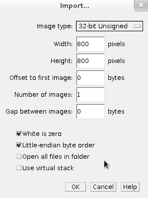

Hands-on: running multi-modality simulations with VIP
This hands-on shows the main features used in VIP to run simulations.
Contents:
Exercise 1: account creation (5 min)
- Connect to http://vip.creatis.insa-lyon.fr and sign-in. Your home page should look exactly like this, with a "General", "SimuBloch" and "Simulators - tutorial" section:

- If this is not the case and you don't have a VIP account: click on "Sign-in" on the welcome page, fill in the form and ask for a "Tutorial" account. You should receive an activation code soon after:


- If you already have a VIP account, but some applications do not show on the home page, click on "My account" and join group "Tutorial":

Back to top
VIP provides a file transfer interface to storage distributed on the European Grid Infrastructure.
It is used to store inputs and results of the simulations.
- In your home, open the "File Transfer" tool"

- You can access 2 directories: "Home" is private, and "Tutorial (group)" is shared among group members.
- Open directory "Tutorial (group)" and download file "hello.txt" using the contextual (right-click) menu or the selection box and
 :
:

- The file is downloaded in two steps: first from the grid to the portal, then from the portal to your local machine. Click on the download link in the "Pool of Transfers" to get it:

- Open your home, create a new directory using
 , and upload a file using
, and upload a file using  . In the backend, the file is uploaded to EGI, and replicated to 3 locations.
. In the backend, the file is uploaded to EGI, and replicated to 3 locations.
Back to top
Exercise 3: X-Ray simulation with Sindbad (10 min)
The Sindbad X-Ray/CT simulator is available in VIP. In this exercise, we will simulate 1 X-Ray projection from the full-body XCAT model.
- Open simulator "Sindbad 0.1.4 - local". A form appears, showing the simulation parameters which are described in tooltips:

- Load example "XRAY"; all the inputs are filled in, except the result directory:

- To add a result directory, click on
 and select your home:
and select your home:

- Launch the simulation.
- The simulation is monitored from
 :
:

- Click on your simulation. A tab appears showing the progress of the execution:

- On the left, tab "Jobs summary" shows information about jobs statuses:

- When the simulation is finished (this should take around 5 minutes), download the results from the main simulation tab:

- To display the simulated image, uncompress results.tar.gz, install ImageJ, launch it, and choose File-Import-Raw. Select image_0.sdt, and specify the following parameters:

- Your simulated X-Ray should appear:

Back to top
Exercise 4: ultrasound simulation (5 min)
The FIELD-II ultrasound simulator is available in VIP. In this exercise, we will simulate a parasternal short-axis echocardiography. As the simulated image is composed of 122 lines and each line requires a few minutes of CPU time, the execution will be parallelized on EGI.
- Open simulator "FIELD-II v0.4" and load example "2Dt cardiac sequence - parasternal short axis - 1 frame".
- Launch the simulation and open the simulation monitor. After some time, 6 jobs are submitted: 5 to compute the image lines, and 1 to merge them in a single image:
TODO: add screenshot.
Back to top
Exercise 5: platform administration (demo, 15 min)
In this exercise, we will demonstrate how the platform is monitored and managed by administrators.
The demonstration will consist of managing:


Back to top
Exercise 6: view ultrasound results (5 min)
Back to top
That's it, we hope you enjoyed the hands-on.